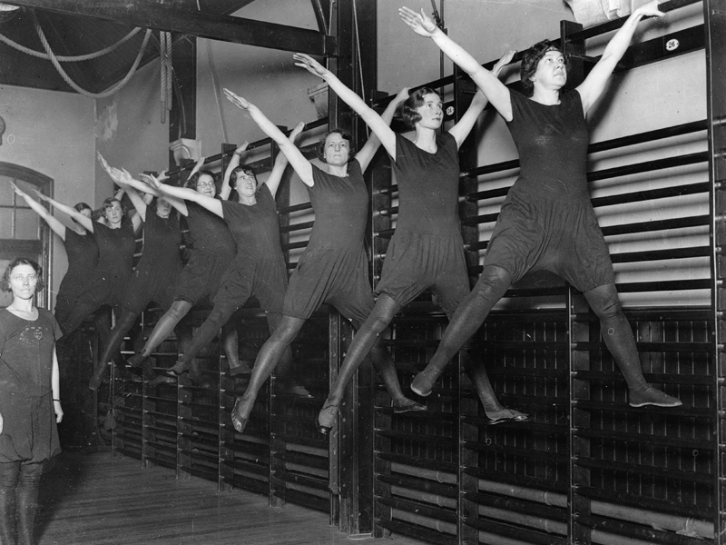
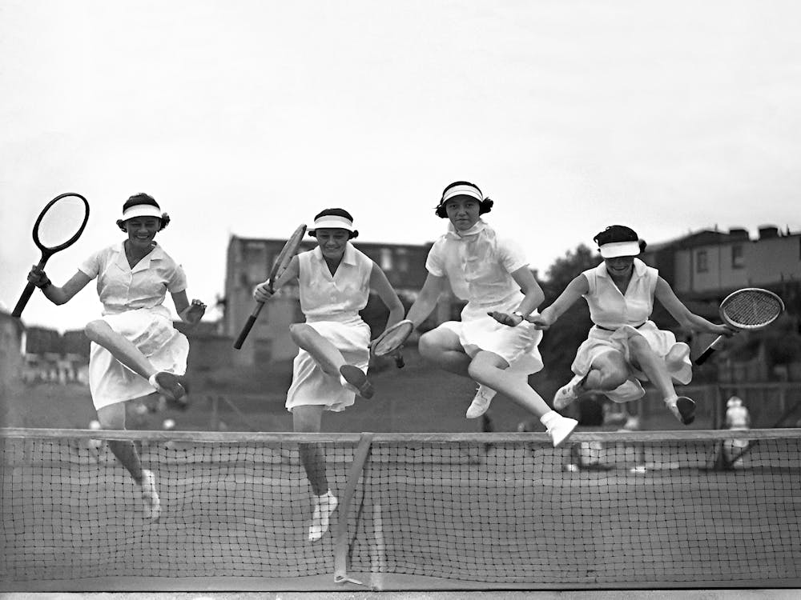
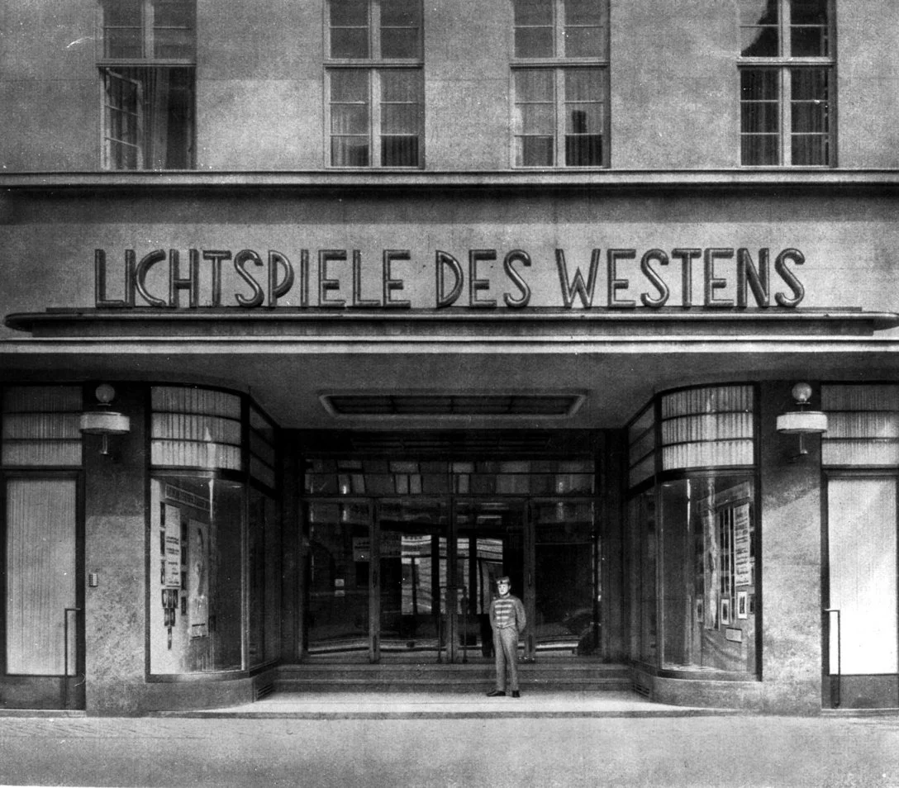

Fußball
Fußball war die beliebteste Sportart in den Goldenen Zwanziger.
Geschichte · Sport · Gesellschaft
Diese Website zeigt einen seriösen Überblick von den 1920er Jahren und den Sportarten sowie Freizeitaktivitäten. Es stehen Quellen, Information und sogar ein Quiz zur Verfügung.
Männer
Männersportarten wurden damals sehr beliebt.
Fußball war die beliebteste Sportart in den Goldenen Zwanziger.

Wie Fußball war Boxen auch sehr beliebt und wichtig, besonders für die Männer.

Bei den Olympischen Spielen in den Jahren 1920, 1924 und 1928 wurde viel Leichtathletik praktiziert.

Waghalsige Entscheidungen z.B schnellere Autos von Rennfahrern zogen viele Menschen zu diesen Sportarten.
Frauen
Frauensportarten begannen an Bedeutung zu gewinnen..

Vereinen erlaubten Frauen zugriff aufs Fit bleiben.

Tennis und Schwimmen für Frauen? wie kann das sein?

Frauen haben auch an die neuen Aktivitäten teilgenommen...

Eine Turnlehrerin die viel geschafft hat.
Kontext
Hobbys und Freizeitbeschäftigungen wurden zum ersten mal ernst genommen und gemacht.
Überblick
Eine vertikale Zeitleiste für wichtige Ereignisse in die Sportwelt.
Nach dem Krieg wollten die Menschen ihren Leben wieder aufbauen und neue Sachen ausprobieren. Sport war einer dieser neuen Interresen. Sport fing an immer ernster genommen zu werden wodurch z.B. Weltmeisterschaften, Turniere und mehr entstanden.
Die ersten Olympischen Spielen nach dem Krieg wurden als Zeichen des Friedens gesehen. Deutschland durfte nicht teilnehmen.
Deutschland war von den Olympischen Spielen 1924 (sowohl den Sommerspielen in Paris als auch von den ersten Winterspielen in Chamonix) ausgeschlossen. Als Strafe für die Rolle des Landes im Ersten Weltkrieg wurden deutsche Athleten vom Internationalen Olympischen Komitee nicht eingeladen. Eine deutsche Teilnahme fand folglich nicht statt.
Deutschland kehrte bei den Olympischen Sommerspielen 1928 in Amsterdam nach 16-jähriger Pause und dem Ausschluss nach dem Ersten Weltkrieg erfolgreich auf die olympische Bühne zurück. Mit 214 Sportlern belegte das Team einen herausragenden 2. Platz im Medaillenspiegel hinter den USA.
Weiter